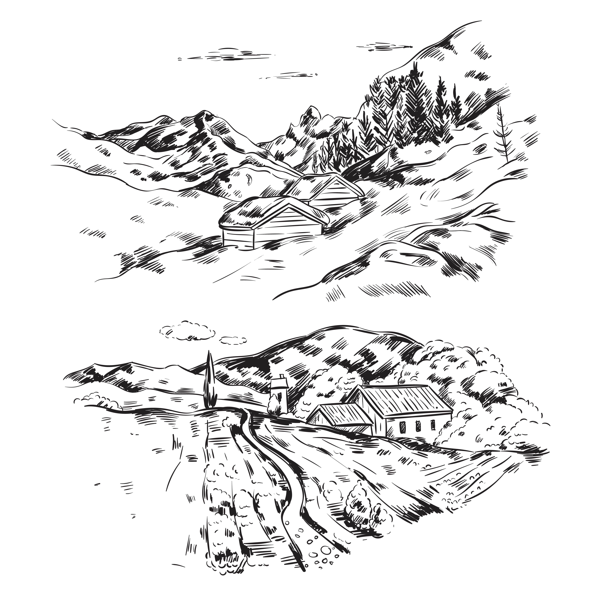

Return to Home
Marl Discovery
- Discovered east of village in 1768
- Reason why Marlboro got its name
- Marl was an important product on farms and spread during winter months in order for the spring tilling
- Used in place for commercial fertilizers back when they were nonexistent
- First industry was exporting material to Keyport docks-1853
- Sent to New York and other parts of the country by ship
